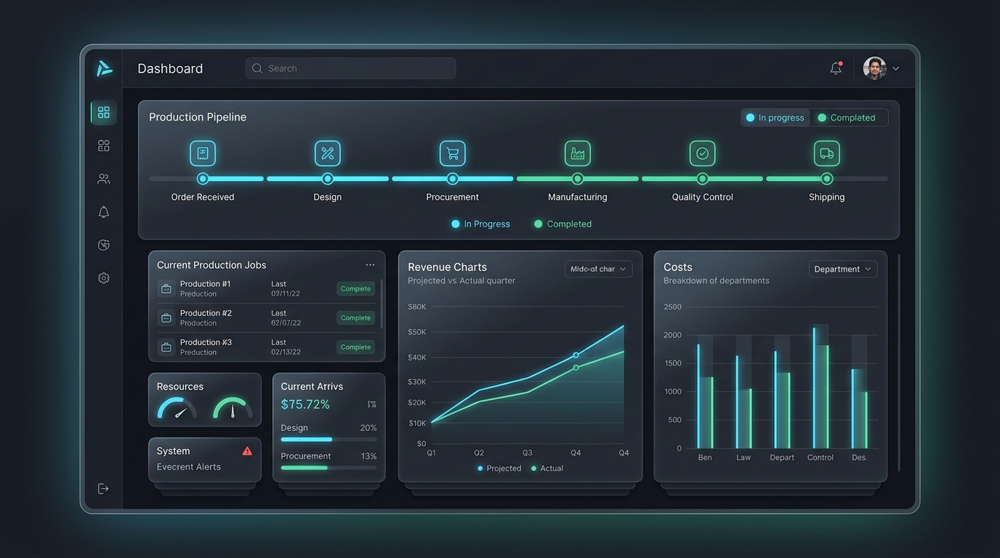

ERP ArchitectureAeterna ERP Platform 🏛️
Enterprise SaaSنظام ERP سحابي متكامل للمصانع والشركات. يدير دورة تصنيع المطابخ والمشاريع في 8 مراحل متعاقبة، مع نظام محاسبي وخزائن متزامنة، وتحكم بالصلاحيات (RBAC)، ونظام حضور جغرافي ذكي (GPS Geofencing) لمنع التبصيم الوهمي وبوابة حية للعميل.
8 مراحل تصنيع
متتابعة مع أرشفة صور المواقع
نظام حضور ذكي
بنطاق جغرافي GPS دقيق
خزينة مالية
متصلة وفواتير وتقارير أرباح تلقائية